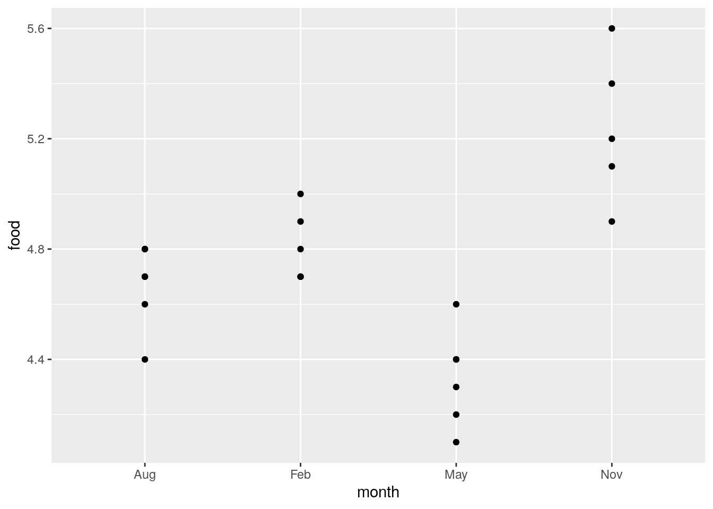
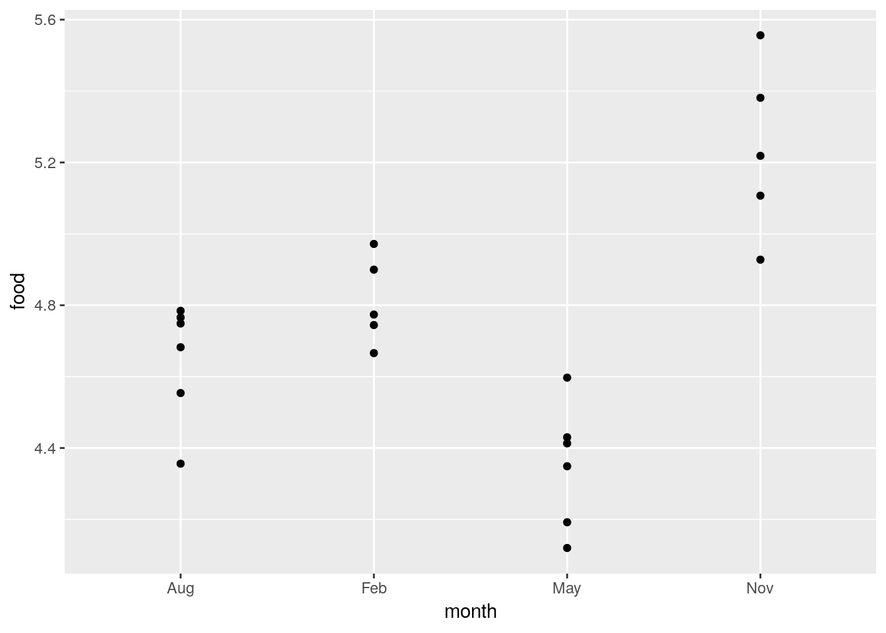
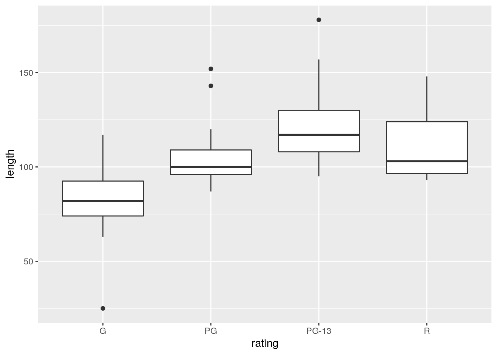
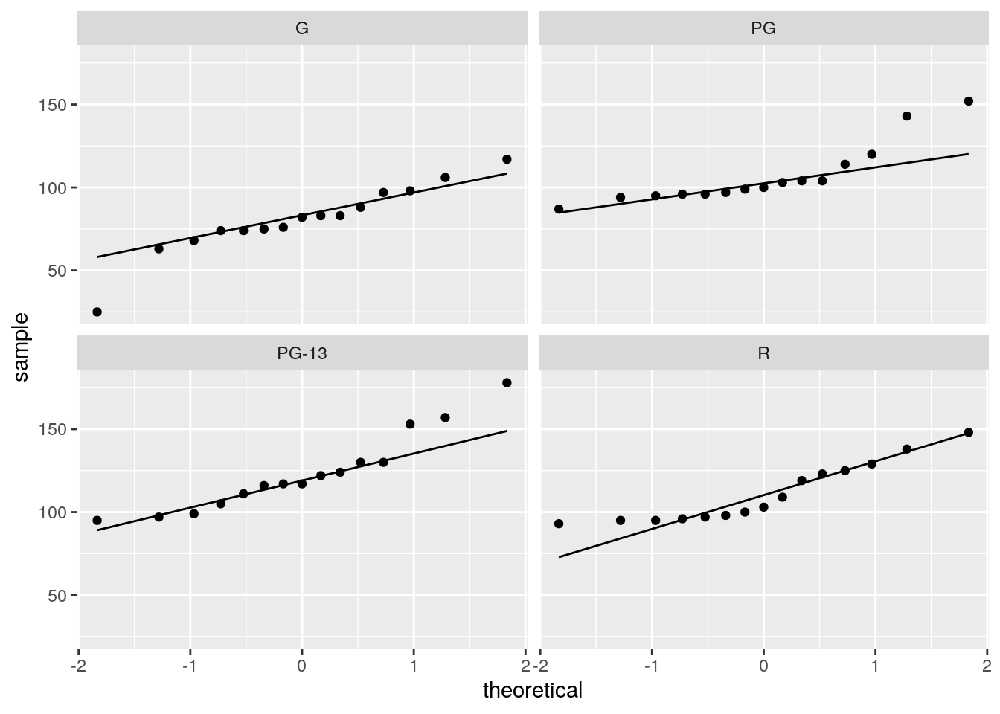
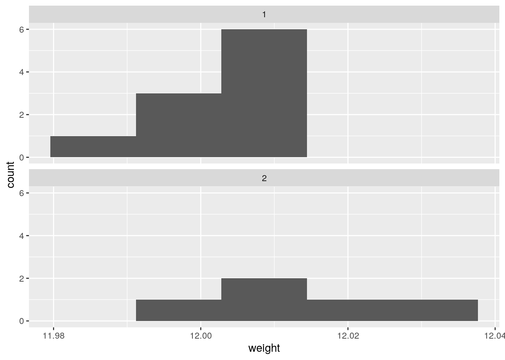
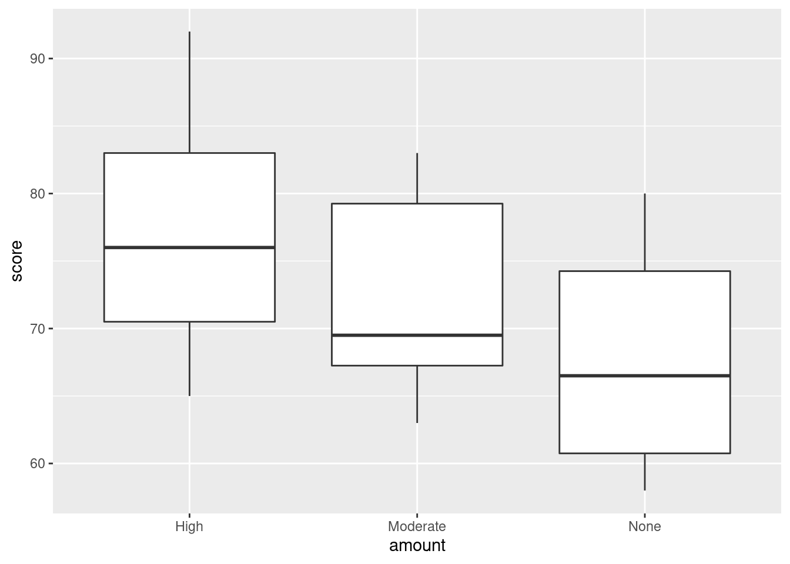

Chapter 13 Analysis of variance
## Warning: package 'ggplot2' was built under R version 3.5.3## Warning: package 'tibble' was built under R version 3.5.3## Warning: package 'tidyr' was built under R version 3.5.3## Warning: package 'readr' was built under R version 3.5.2## Warning: package 'purrr' was built under R version 3.5.3## Warning: package 'dplyr' was built under R version 3.5.2## Warning: package 'stringr' was built under R version 3.5.2## Warning: package 'forcats' was built under R version 3.5.1## Warning: package 'survminer' was built under R version 3.5.1## Warning: package 'ggpubr' was built under R version 3.5.1## Warning: package 'magrittr' was built under R version 3.5.1## Warning: package 'car' was built under R version 3.5.1## Warning: package 'carData' was built under R version 3.5.1## Warning: package 'ggbiplot' was built under R version 3.5.1## Warning: package 'plyr' was built under R version 3.5.1## Warning: package 'scales' was built under R version 3.5.1## Warning: package 'ggrepel' was built under R version 3.5.1## Warning: package 'broom' was built under R version 3.5.2## Warning: package 'rstan' was built under R version 3.5.3## Warning: package 'StanHeaders' was built under R version 3.5.113.1 Movie ratings and lengths
Before a movie is shown in theatres, it receives a “rating” that says what kind of material it contains. link explains the categories, from G (suitable for children) to R (anyone under 17 must be accompanied by parent/guardian). In 2011, two students collected data on the length (in minutes) and the rating category, for 15 movies of each rating category, randomly chosen from all the movies released that year. The data are at link.
- Read the data into R, and display (some of) what you read in.
Solution
read_csv:
## Parsed with column specification:
## cols(
## length = col_double(),
## rating = col_character()
## )## # A tibble: 60 x 2
## length rating
## <dbl> <chr>
## 1 25 G
## 2 75 G
## 3 88 G
## 4 63 G
## 5 76 G
## 6 97 G
## 7 68 G
## 8 82 G
## 9 98 G
## 10 74 G
## # … with 50 more rowsSomething that looks like a length in minutes, and a rating.
- Count how many movies there are of each rating.
Solution
## # A tibble: 4 x 2
## rating n
## <chr> <int>
## 1 G 15
## 2 PG 15
## 3 PG-13 15
## 4 R 15Fifteen of each rating. (It’s common to have the same number of observations in each group, but not necessary for a one-way ANOVA.)
- Carry out an ANOVA and a Tukey analysis (if warranted).
Solution
ANOVA first:
## Df Sum Sq Mean Sq F value Pr(>F)
## rating 3 14624 4875 11.72 4.59e-06 ***
## Residuals 56 23295 416
## ---
## Signif. codes: 0 '***' 0.001 '**' 0.01 '*' 0.05 '.' 0.1 ' ' 1This P-value is 0.00000459, which is way less than 0.05.
Having rejected the null (which said “all means equal”), we now need to do Tukey, thus:
## Tukey multiple comparisons of means
## 95% family-wise confidence level
##
## Fit: aov(formula = length ~ rating, data = movies)
##
## $rating
## diff lwr upr p adj
## PG-G 26.333333 6.613562 46.053104 0.0044541
## PG-13-G 42.800000 23.080229 62.519771 0.0000023
## R-G 30.600000 10.880229 50.319771 0.0007379
## PG-13-PG 16.466667 -3.253104 36.186438 0.1327466
## R-PG 4.266667 -15.453104 23.986438 0.9397550
## R-PG-13 -12.200000 -31.919771 7.519771 0.3660019Cast your eye down the p adj column and look for the ones
that are significant, here the first three. These are all comparisons
with the G (“general”) movies, which are shorter on average than the
others (which are not significantly different from each other).
If you like, you can make a table of means to verify that:
## # A tibble: 4 x 2
## rating mean
## <chr> <dbl>
## 1 G 80.6
## 2 PG 107.
## 3 PG-13 123.
## 4 R 111.When we do this problem in SAS, you’ll see the Tukey get handled a different way, one that you might find more appealing.
- Make a graph to assess whether this ANOVA is trustworthy. Discuss your graph and its implications briefly.
Solution
The obvious graph is a boxplot:

For ANOVA, we are looking for approximately normal distributions within each group and approximately equal spreads. Without the outliers, I would be more or less happy with that, but the G movies have a low outlier that would pull the mean down and the PG and PG-13 movies have outliers that would pull the mean up. So a comparison of means might make the differences look more significant than they should. Having said that, you could also say that the ANOVA is very significant, so even considering the effect of the outliers, the differences between G and the others are still likely to be significant.
Extra: the way to go if you don’t trust the ANOVA is (as for the two-sample \(t\)) the Mood’s median test. This applies to any number of groups, and works in the same way as before:
## $table
## above
## group above below
## G 2 13
## PG 7 7
## PG-13 12 3
## R 8 6
##
## $test
## what value
## 1 statistic 13.752380952
## 2 df 3.000000000
## 3 P-value 0.003262334Still significant, though not quite as small a P-value as before (which echoes our thoughts about what the outliers might do to the means). If you look at the table above the test results, you see that the G movies are mostly shorter than the overall median, but now the PG-13 movies are mostly longer. So the picture is a little different.
Mood’s median test does not naturally come with something like Tukey.
What you can do is to do all the pairwise Mood’s median tests, between
each pair of groups, and then adjust to allow for your having done
several tests at once. I thought this was generally useful enough that
I put it into smmr under the name pairwise_median_test:
## # A tibble: 6 x 4
## g1 g2 p_value adj_p_value
## <chr> <chr> <dbl> <dbl>
## 1 G PG 0.00799 0.0479
## 2 G PG-13 0.0000590 0.000354
## 3 G R 0.0106 0.0635
## 4 PG PG-13 0.0106 0.0635
## 5 PG R 0.715 1
## 6 PG-13 R 0.273 1You can ignore those (adjusted) P-values rather stupidly bigger than 1. These are not significant.
There are two significant differences in median length: between G movies and the two flavours of PG movies. The G movies are significantly shorter (as you can tell from the boxplot), but the difference between G and R movies is no longer significant (a change from the regular ANOVA).
You may be puzzled by something in the boxplot: how is it that the G movies are significantly shorter than the PG movies, but not significantly shorter than the R movies, ? In Tukey, if the difference in means is bigger, the P-value is smaller. Actually, this doesn’t always work if the sample sizes in each group are different. If you’re comparing two small groups, it takes a very large difference in means to get a small P-value. But in this case the sample sizes are all the same. The resolution to this puzzle, such as it is, is that Mood’s median test is not directly comparing the medians of the groups (despite its name); it’s counting values above and below a joint median, which might be a different story.
13.2 Deer and how much they eat
Do adult deer eat different amounts of food at different times of the year? The data in link are the weights of food (in kilograms) consumed by randomly selected adult deer observed at different times of the year (in February, May, August and November). We will assume that these were different deer observed in the different months. (If the same animals had been observed at different times, we would have been in the domain of “repeated measures”, which would require a different analysis, beyond the scope of this course.)
- Read the data into R, and calculate numbers of observations and the median amounts of food eaten each month.
Solution
The usual stuff for data values separated by spaces:
## Parsed with column specification:
## cols(
## month = col_character(),
## food = col_double()
## )and then, recalling that n() is the handy way of getting the
number of observations in each group:
## # A tibble: 4 x 3
## month n med
## <chr> <int> <dbl>
## 1 Aug 6 4.7
## 2 Feb 5 4.8
## 3 May 6 4.35
## 4 Nov 5 5.2When you want the number of observations plus some other
summaries, as here, the group-by and summarize idea is the way, using
n() to get the number of observations in each
group. count counts the number of observations per group when
you only have grouping variables.
The medians differ a bit, but it’s hard to judge without a sense of spread, which the boxplots (next) provide. November is a bit higher and May a bit lower.
- Make side-by-side boxplots of the amount of food eaten each month. Comment briefly on what you see.
Solution

This offers the suggestion that maybe November will be significantly higher than the rest and May significantly lower, or at least they will be significantly different from each other.
This is perhaps getting ahead of the game: we should be thinking about spread and shape. Bear in mind that there are only 5 or 6 observations in each group, so you won’t be able to say much about normality. In any case, we are going to be doing a Mood’s median test, so any lack of normality doesn’t matter (eg. perhaps that 4.4 observation in August). Given the small sample sizes, I actually think the spreads are quite similar.
Another way of looking at the data, especially with these small sample sizes, is a “dot plot”: instead of making a boxplot for each month, we plot the actual points for each month as if we were making a scatterplot:

Wait a minute. There were five deer in February and six in August. Where did they go?
The problem is overplotting: more than one of the deer plotted in the same place on the plot, because the amounts of food eaten were only given to one decimal place and there were some duplicated values. One way to solve this is to randomly move the points around so that no two of them plot in the same place. This is called jittering, and is done like this:

Now you see all the deer, and you can see that two pairs of points in August and one pair of points in February are close enough on the jittered plot that they would have been the same to one decimal place.
I wanted to
keep the points above the months they belong to, so I only allowed vertical
jitter (that’s the width and height in the
geom_jitter; the width is zero so there is no horizontal
jittering).
If you like, you can colour the
months; it’s up to you whether you think that’s making the plot easier
to read, or is overkill (see my point on the facetted plots on the
2017 midterm).
This way you see the whole distribution for each month. Normally it’s nicer to see the summary made by the boxplots, but here there are not very many points. The value of 4.4 in August does look quite a bit lower than the rest, but the other months look believably normal given the small sample sizes. I don’t know about equal spreads (November looks more spread out), but normality looks believable. Maybe this is the kind of situation in which Welch’s ANOVA is a good idea. (If you believe that the normality-with-unequal-spreads is a reasonable assumption to make, then the Welch ANOVA will be more powerful than the Mood’s median test, and so should be preferred.)
- Run a Mood’s median test as in lecture (ie. not using
smmr). What do you conclude, in the context of the data?
Solution
To give you some practice with the mechanics, first find the overall median:
## # A tibble: 1 x 1
## med
## <dbl>
## 1 4.7or
## [1] 4.7I like the first way because it’s the same idea as we did before, just not differentiating by month. I think there are some observations exactly equal to the median, which will mess things up later:
## # A tibble: 4 x 2
## month food
## <chr> <dbl>
## 1 Feb 4.7
## 2 Feb 4.7
## 3 Aug 4.7
## 4 Aug 4.7There are, two in February and two in August.
Next, make (and save) a table of the observations within each month that are above and below this median:
##
## month FALSE TRUE
## Aug 4 2
## Feb 5 0
## May 0 6
## Nov 5 0or
##
## month FALSE TRUE
## Aug 4 2
## Feb 2 3
## May 6 0
## Nov 0 5Either of these is good, but note that they are different. Two of the
February observations (the ones that were exactly 4.7) have
“switched sides”,
and (look carefully) two of the August ones also. Hence the
test results will be different, and smmr (later) will give
different results again:
## Warning in chisq.test(tab1, correct = F): Chi-squared approximation may be
## incorrect##
## Pearson's Chi-squared test
##
## data: tab1
## X-squared = 16.238, df = 3, p-value = 0.001013## Warning in chisq.test(tab2, correct = F): Chi-squared approximation may be
## incorrect##
## Pearson's Chi-squared test
##
## data: tab2
## X-squared = 11.782, df = 3, p-value = 0.008168The warnings are because of the small frequencies. If you’ve done these by hand before (which you will have if you took PSYC08), you’ll remember that thing about “expected frequencies less than 5”. This is that. It means “don’t take those P-values too seriously.”
The P-values are different, but they are both clearly significant, so the median amounts of food eaten in the different months are not all the same. (This is the same “there are differences” that you get from an ANOVA, which you would follow up with Tukey.) Despite the injunction not to take the P-values too seriously, I think these are small enough that they could be off by a bit without affecting the conclusion.
The first table came out with a smaller P-value because it looked more extreme: all of the February measurements were taken as higher than the overall median (since we were counting “strictly less” and “the rest”). In the second table, the February measurements look more evenly split, so the overall P-value is not quite so small.
You can make a guess as to what smmr will come out with
(next), since it throws away any data values exactly equal to the median.
- Run a Mood’s median test using
smmr, and compare the results with the previous part.
Solution
Off we go:
## $table
## above
## group above below
## Aug 2 2
## Feb 3 0
## May 0 6
## Nov 5 0
##
## $test
## what value
## 1 statistic 13.950000000
## 2 df 3.000000000
## 3 P-value 0.002974007The P-value came out in between the other two, but the conclusion is the same all three ways: the months are not all the same in terms of median food eaten. The researchers can then go ahead and try to figure out why the animals eat different amounts in the different months.
You might be wondering how you could get rid of the equal-to-median
values in the build-it-yourself way. This is filter from
dplyr, which you use first:
##
## month FALSE TRUE
## Aug 2 2
## Feb 3 0
## May 0 6
## Nov 5 0## Warning in chisq.test(tab3): Chi-squared approximation may be incorrect##
## Pearson's Chi-squared test
##
## data: tab3
## X-squared = 13.95, df = 3, p-value = 0.002974which is exactly what smmr does, so the answer is
identical.
The computer scientists among you will note that I should not use equals or not-equals to compare a decimal floating-point number, since decimal numbers are not represented exactly in the computer. R, however, is ahead of us here, since when you try to do food not equal to 4.7, it tests whether food is more than a small distance away from 4.7, which is the right way to do it. In R, therefore, code like my food != 4.7 does exactly what I want, but in something like C, it does not, and you have to be more careful: abs(food-4.7)>1e-8, or something like that. The small number 1e-8 is typically equal to machine epsilon, the smallest number on a computer that is distinguishable from zero.
How would an ANOVA come out here? My guess is, very similarly:
## Df Sum Sq Mean Sq F value Pr(>F)
## month 3 2.3065 0.7688 22.08 2.94e-06 ***
## Residuals 18 0.6267 0.0348
## ---
## Signif. codes: 0 '***' 0.001 '**' 0.01 '*' 0.05 '.' 0.1 ' ' 1## Tukey multiple comparisons of means
## 95% family-wise confidence level
##
## Fit: aov(formula = food ~ month, data = deer)
##
## $month
## diff lwr upr p adj
## Feb-Aug 0.1533333 -0.16599282 0.4726595 0.5405724
## May-Aug -0.3333333 -0.63779887 -0.0288678 0.0290758
## Nov-Aug 0.5733333 0.25400718 0.8926595 0.0004209
## May-Feb -0.4866667 -0.80599282 -0.1673405 0.0021859
## Nov-Feb 0.4200000 0.08647471 0.7535253 0.0109631
## Nov-May 0.9066667 0.58734052 1.2259928 0.0000013The conclusion is the same, but the P-value on the \(F\)-test is much smaller. I think this is because the \(F\)-test uses the actual values, rather than just whether they are bigger or smaller than 4.7. The Tukey says that all the months are different in terms of (now) mean, except for February and August, which were those two very similar ones on the boxplot.
- How is it that Mood’s median test does not completely answer the question you really want to answer? How might you get an answer to the question you really want answered? Explain briefly, and obtain the answer you really want, discussing your results briefly.
Solution
That’s rather a lot, so let’s take those things one at a time. Most of these parts are old from assignment questions that I actually asked a previous class to do, but not this part. I added it later.
Mood’s median test is really like the \(F\)-test in ANOVA: it’s testing the null hypothesis that the groups (months) all have the same median (of food eaten), against the alternative that the null is not true. We rejected this null, but we don’t know which months differ significantly from which. To resolve this in ANOVA, we do Tukey (or Games-Howell if we did the Welch ANOVA). The corresponding thing here is to do all the possible two-group Mood tests on all the pairs of groups, and, after adjusting for doing (here) six tests at once, look at the adjusted P-values to see how the months differ in terms of food eaten.
This is accomplished in smmr via pairwise_median_test,
thus:
## # A tibble: 6 x 4
## g1 g2 p_value adj_p_value
## <chr> <chr> <dbl> <dbl>
## 1 Aug Feb 0.147 0.884
## 2 Aug May 0.0209 0.126
## 3 Aug Nov 0.00270 0.0162
## 4 Feb May 0.00157 0.00939
## 5 Feb Nov 0.0578 0.347
## 6 May Nov 0.00157 0.00939This compares each month with each other month. Looking at the last column, there are only three significant differences: August-November, February-May and May-November. Going back to the table of medians we made in (a), November is significantly higher (in terms of median food eaten) than August and May (but not February), and February is significantly higher than May. The other differences are not big enough to be significant.
Extra: Pairwise median tests done this way are not likely to be very sensitive (that is, powerful), for a couple of reasons: (i) the usual one that the median tests don’t use the data very efficiently, and (ii) the way I go from the unadjusted to the adjusted P-values is via Bonferroni (here, multiply the P-values by 6), which is known to be safe but conservative. This is why the Tukey produced more significant differences among the months than the pairwise median tests did.
13.3 Movie ratings again
This question again uses the movie rating data at link.
- Read the data into R and obtain the number of movies of each rating and the median length of movies of each rating.
Solution
Reading in is as in the other question using these data (just copy your code, or mine). No credit for that, since you’ve done it before.
## Parsed with column specification:
## cols(
## length = col_double(),
## rating = col_character()
## )## # A tibble: 60 x 2
## length rating
## <dbl> <chr>
## 1 25 G
## 2 75 G
## 3 88 G
## 4 63 G
## 5 76 G
## 6 97 G
## 7 68 G
## 8 82 G
## 9 98 G
## 10 74 G
## # … with 50 more rowsNow, the actual for-credit part, which is a group_by and
summarize:
## # A tibble: 4 x 3
## rating count med
## <chr> <int> <dbl>
## 1 G 15 82
## 2 PG 15 100
## 3 PG-13 15 117
## 4 R 15 103The G movies have a smaller median than the others, but also the PG-13 movies seem to be longer on average (not what we found before).
- Obtain a suitable graph that assesses the assumptions for ANOVA. Why do you think it is not reasonable to run ANOVA here? Explain briefly.
Solution
The graph would seem to be a boxplot, side by side for each group:

We are looking for approximate normal distributions with approximately equal spreads, which I don’t think we have: there are outliers, at the low end for G movies, and at the high end for PG and PG-13 movies. Also, you might observe that the distribution of lengths for R movies is skewed to the right. (Noting either the outliers or skewness as a reason for not believing normality is enough, since all we need is one way that normality fails.)
I think the spreads (as measured by the interquartile ranges) are acceptably similar, but since we have rejected normality, it is a bit late for that.
So I think it is far from reasonable to run an ANOVA here. In my opinion 15 observations in each group is not enough to gain much from the Central Limit Theorem either.
Extra: since part of the assumption for ANOVA is (approximate)
normality, it would also be entirely reasonable to make normal
quantile plots, one for each movie type, facetted. Remember the
process: you pretend that you are making a normal quantile plot for
all the data together, regardless of group, and then at the last
minute, you throw in a facet_wrap. I’ve written the code out
on three lines, so that you can see the pieces: the “what to plot”,
then the normal quantile plot part, then the facetting:

Since there are four movie ratings, facet_wrap has arranged
them into a \(2\times 2\) grid, which satisfyingly means that each
normal quantile plot is more or less square and thus easy to
interpret.
The principal problem unveiled by these plots is outliers. It looks as if the G movies have one low outlier, the PG movies have two high outliers, the PG-13 movies have one or maybe three high outliers (depending on how you count them), and the R movies have none. Another way to look at the last two is you could call them curved, with too much bunching up at the bottom and (on PG-13) too much spread-out-ness at the top, indicating right-skewed distributions. The distribution of lengths of the R-rated movies is too bunched up at the bottom, but as you would expect for a normal at the top. The R movies show the right-skewedness in an odd way: usually this skewness shows up by having too many high values, but this time it’s having too few low values.
The assumption for ANOVA is that all four of these are at least approximately normal (with the same spread). We found problems with the normality on at least three of them, so we definitely have doubts about trusting ANOVA here.
I could have used scales=free here to get a separate \(y\)-axis
for each plot, but since the \(y\)-axis is movie length each time, and
all four groups would be expected to have at least roughly similar
movie lengths, I left it as it was. (The other advantage of leaving
the scales the same is that you can compare spread by comparing the
slopes of the lines on these graphs; since the lines connect the
observed and theoretical quartiles, a steeper slope means a larger
IQR. Here, the R line is steepest and the PG line is flattest. Compare
this with the spreads of the boxplots.)
Extra extra: if you want, you can compare the normal quantile plots with the boxplots to see whether you get the same conclusion from both. For the G movies, the low outlier shows up both ways, and the rest of the distribution is at least more or less normal. For the PG movies, I’d say the distribution is basically normal except for the highest two values (on both plots). For the PG-13 movies, only the highest value shows up as an outlier, but the next two apparent outliers on the normal quantile plot are at the upper end of the long upper whisker, so the boxplot is saying “right-skewed with one upper outlier” rather than “three upper outliers”. The distribution of the R movies is skewed right, with the bunching at the bottom showing up as the very small lower whisker.
The boxplots and the normal quantile plots are basically telling the same story in each case, but they are doing it in a slightly different way.
- Run a Mood’s median test (use
smmrif you like). What do you conclude, in the context of the data?
Solution
The smart way is to use smmr, since it is much easier:
## $table
## above
## group above below
## G 2 13
## PG 7 7
## PG-13 12 3
## R 8 6
##
## $test
## what value
## 1 statistic 13.752380952
## 2 df 3.000000000
## 3 P-value 0.003262334The movies do not all have the same median length, or at least one of the rating types has movies of different median length from the others. Or something equivalent to that. It’s the same conclusion as for ANOVA, only with medians instead of means.
You can speculate about why the test came out significant. My guess is that the G movies are shorter than average, and that the PG-13 movies are longer than average. (We had the first conclusion before, but not the second. This is where medians are different from means.)
The easiest way to see which movie types really differ in length from
which is to do all the pairwise median tests, which is in
smmr thus:
## # A tibble: 6 x 4
## g1 g2 p_value adj_p_value
## <chr> <chr> <dbl> <dbl>
## 1 G PG 0.00799 0.0479
## 2 G PG-13 0.0000590 0.000354
## 3 G R 0.0106 0.0635
## 4 PG PG-13 0.0106 0.0635
## 5 PG R 0.715 1
## 6 PG-13 R 0.273 1The inputs for this are the same ones in the same order as for
median_test. (A design decision on my part, since otherwise
I would never have been able to remember how to run these!)
Only the first two of these are significant (look in the last
column). We can remind ourselves of the sample medians:
## # A tibble: 4 x 3
## rating count med
## <chr> <int> <dbl>
## 1 G 15 82
## 2 PG 15 100
## 3 PG-13 15 117
## 4 R 15 103The G movies are significantly shorter than the PG and PG-13 movies, but not quite significantly different from the R movies. This is a little odd, since the difference in sample medians between G and PG, significant, is less than for G and R (not significant). There are several Extras here, which you can skip if you don’t care about the background. First, we can do the median test by hand: This has about four steps: (i) find the median of all the data, (ii) make a table tabulating the number of values above and below the overall median for each group, (iii) test the table for association, (iv) draw a conclusion. Thus (i):
## [1] 100or
## # A tibble: 1 x 1
## med
## <dbl>
## 1 100or store it in a variable, and then (ii):
## rating
## G PG PG-13 R
## FALSE 2 8 12 9
## TRUE 13 7 3 6or
## rating
## G PG PG-13 R
## FALSE 13 8 3 7
## TRUE 2 7 12 8These differ because there are evidently some movies of length exactly
100 minutes, and it matters whether you count \(<\) and \(\ge\) (as in
tab1) or \(>\) and \(le\) (tab2). Either is good.
Was I right about movies of length exactly 100 minutes?
## # A tibble: 2 x 2
## length rating
## <dbl> <chr>
## 1 100 PG
## 2 100 ROne PG and one R. It makes a difference to the R movies, but if you
look carefully, it makes a difference to the PG movies as well,
because the False and True switch roles between tab1 and
tab2 (compare the G movies, for instance).
You
need to store your table in a variable because it has to get passed on
to chisq.test below, (iii):
##
## Pearson's Chi-squared test
##
## data: tab1
## X-squared = 14.082, df = 3, p-value = 0.002795or
##
## Pearson's Chi-squared test
##
## data: tab2
## X-squared = 13.548, df = 3, p-value = 0.003589Either is correct, or, actually, without the correct=F.
see discussion elsewhere about Yates’ Correction and fixed margins.
The conclusion (iv) is the same either way: the null of no association is clearly rejected (with a P-value of 0.0028 or 0.0036 as appropriate), and therefore whether a movie is longer or shorter than median length depends on what rating it has: that is, the median lengths do differ among the ratings. The same conclusion, in other words, as the \(F\)-test gave, though with not quite such a small P-value.
Second, you might be curious about how
we might do something like Tukey having found some significant
differences (that is, what’s lurking in the background of
pairwise_median_test).
Let’s first suppose we are comparing G and PG movies. We need
to pull out just those, and then compare them using
smmr. Because the first input to median_test is a
data frame, it fits neatly into a pipe (with the data frame omitted):
## $table
## above
## group above below
## G 4 11
## PG 10 3
##
## $test
## what value
## 1 statistic 7.035897436
## 2 df 1.000000000
## 3 P-value 0.007989183We’re going to be doing this about six times — \({4 \choose 2}=6\) choices
of two rating groups to compare out of the four — so we should have a
function to do it. I think the input to the function should be a data
frame that has a column called rating, and two names of
ratings to compare:
comp2 <- function(rat_1, rat_2, d) {
d %>%
filter(rating == rat_1 | rating == rat_2) %>%
median_test(length, rating)
}The way I wrote this function is that you have to specify the movie
ratings in quotes. It is possible to write it in such a way
that you input them without quotes, tidyverse style, but that
gets into “non-standard evaluation” and enquo() and
!!, which (i) I have to look up every time I want to do it,
and (ii) I am feeling that the effort involved in explaining it to you
is going to exceed the benefit you will gain from it. I mastered it enough
to make it work in smmr (note that you specify column names
without quotes there). There are tutorials on this kind of thing if
you’re interested.
Anyway, testing:
## $table
## above
## group above below
## G 4 11
## PG 10 3
##
## $test
## what value
## 1 statistic 7.035897436
## 2 df 1.000000000
## 3 P-value 0.007989183That works, but I really only want to pick out the P-value, which is
in the list item test in the column value, the third
entry. So let’s rewrite the function to return just that:
comp2 <- function(rat_1, rat_2, d) {
d %>%
filter(rating == rat_1 | rating == rat_2) %>%
median_test(length, rating) %>%
pluck("test", "value", 3)
}
comp2("G", "PG", movies)## [1] 0.007989183Gosh.
What median_test returns is an R list that has two
things in it, one called table and one called
test. The thing called test is a data frame with a
column called value that contains the P-values. The third of
these is the two-sided P-value that we want.
You might not have seen pluck before. This is a way of
getting things out of complicated data structures. This one takes the
output from median_test and from it grabs the piece called
test. This is a data frame. Next, we want the column called
value, and from that we want the third row. These are
specified one after the other to pluck and it pulls out the
right thing.
So now our function returns just the P-value.
I have to say that it took me several goes and some playing around in
R Studio to sort this one out. Once I thought I understood
pluck, I wondered why my function was not returning a
value. And then I realized that I was saving the value inside the
function and not returning it. Ooops. The nice thing about
pluck is that I can put it on the end of the pipeline and and
it will pull out (and return) whatever I want it to.
Let’s grab a hold of the different rating groups we have:
## [1] "G" "PG-13" "PG" "R"The Pythonisti among you will know how to finish this off: do a loop-inside-a-loop over the rating groups, and get the P-value for each pair. You can do that in R, if you must. It’s not pretty at all, but it works:
ii <- character(0)
jj <- character(0)
pp <- numeric(0)
for (i in the_ratings) {
for (j in the_ratings) {
pval <- comp2(i, j, movies)
ii <- c(ii, i)
jj <- c(jj, j)
pp <- c(pp, pval)
}
}
tibble(ii, jj, pp)## # A tibble: 16 x 3
## ii jj pp
## <chr> <chr> <dbl>
## 1 G G 1
## 2 G PG-13 0.0000590
## 3 G PG 0.00799
## 4 G R 0.0106
## 5 PG-13 G 0.0000590
## 6 PG-13 PG-13 1
## 7 PG-13 PG 0.0106
## 8 PG-13 R 0.273
## 9 PG G 0.00799
## 10 PG PG-13 0.0106
## 11 PG PG 1
## 12 PG R 0.715
## 13 R G 0.0106
## 14 R PG-13 0.273
## 15 R PG 0.715
## 16 R R 1This is a lot of fiddling about, since you have to initialize three vectors, and then update them every time through the loop. It’s hard to read, because the actual business part of the loop is the calculation of the P-value, and that’s almost hidden by all the book-keeping. (It’s also slow and inefficient, though the slowness doesn’t matter too much here since it’s not a very big problem.)
Let’s try another way:
## # A tibble: 16 x 2
## first second
## <chr> <chr>
## 1 G G
## 2 G PG
## 3 G PG-13
## 4 G R
## 5 PG G
## 6 PG PG
## 7 PG PG-13
## 8 PG R
## 9 PG-13 G
## 10 PG-13 PG
## 11 PG-13 PG-13
## 12 PG-13 R
## 13 R G
## 14 R PG
## 15 R PG-13
## 16 R RThis does “all possible combinations” of one rating with another. We don’t actually need all of that; we just need the ones where the first one is (alphabetically) strictly less than the second one. This is because we’re never comparing a rating with itself, and each pair of ratings appears twice, once in alphabetical order, and once the other way around. The ones we need are these:
## # A tibble: 6 x 2
## first second
## <chr> <chr>
## 1 G PG
## 2 G PG-13
## 3 G R
## 4 PG PG-13
## 5 PG R
## 6 PG-13 RA technique thing to note: instead of asking “how do I pick out the distinct pairs of ratings?”, I use two simpler tools: first I make all the combinations of pairs of ratings, and then out of those, pick the ones that are alphabetically in ascending order, which we know how to do.
Now we want to call our function comp2 for each of the things
in first and each of the things in second,
and make a new column called pval that contains exactly
that. This (coming fresh from page 332 of the R book, this being the
first time I’ve ever used it)
This was a year ago when I first wrote this.} is exactly what the texttt{map2 family of functions
does. In our case, comp2 returns a decimal number, a
dbl, so map2_dbl does it. Thus:
crossing(first = the_ratings, second = the_ratings) %>%
filter(first < second) %>%
mutate(pval = map2_dbl(first, second, ~ comp2(.x, .y, movies)))## # A tibble: 6 x 3
## first second pval
## <chr> <chr> <dbl>
## 1 G PG 0.00799
## 2 G PG-13 0.0000590
## 3 G R 0.0106
## 4 PG PG-13 0.0106
## 5 PG R 0.715
## 6 PG-13 R 0.273The logic of map2_dbl is
“for each of the things in first, and each of the things in second, taken in parallel, call the function comp2 with those two inputs in that order, always with data frame movies”.
The .x
and .y play the role of the . that we usually have
inside a map, but now we’re “mapping” over two things rather than
just one, so that they cannot both be called ..
One more thing: we’re doing 6 tests at once here, so we’re giving ourselves 6 chances to reject a null (all medians equal) that might have been true. So the true probability of a type I error is no longer 0.05 but something bigger.
The easiest way around that is to do a so-called Bonferroni
adjustment: instead of rejecting if the P-value is less than 0.05, we
only reject if it is less than \(0.05/6\), since we are doing 6
tests. This is a fiddly calculation to do by hand, but it’s easy to
build in another mutate, thus:
In the pairwise median test in smmr, I did this backwards: rather than changing the alpha that you compare each P-value with from 0.05 to 0.05/6, I flip it around so that you adjust the P-values by multiplying them by 6, and then comparing the adjusted P-values with the usual 0.05. It comes to the same place in the end, except that this way you can get adjusted P-values that are greater than 1, which makes no sense. You read those as being definitely not significant.
crossing(first = the_ratings, second = the_ratings) %>%
filter(first < second) %>%
mutate(pval = map2_dbl(first, second, ~ comp2(.x, .y, movies))) %>%
mutate(reject = pval < 0.05 / 6)## # A tibble: 6 x 4
## first second pval reject
## <chr> <chr> <dbl> <lgl>
## 1 G PG 0.00799 TRUE
## 2 G PG-13 0.0000590 TRUE
## 3 G R 0.0106 FALSE
## 4 PG PG-13 0.0106 FALSE
## 5 PG R 0.715 FALSE
## 6 PG-13 R 0.273 FALSEAnd not a loop in sight.
This is how I coded it in pairwise_median_test. If you want to
check it, it’s on Github:
link.
The function median_test_pair is the same as comp2
above.
So the only significant differences are now G compared to PG and PG-13. There is not a significant difference in median movie length between G and R, though it is a close call. We thought the PG-13 movies might have a significantly different median from other rating groups beyond G, but they turn out not to have. (The third and fourth comparisons would have been significant had we not made the Bonferroni adjustment to compensate for doing six tests at once; with that adjustment, we only reject if the P-value is less than \(0.05/6=0.0083\), and so 0.0106 is not quite small enough to reject with.)
Listing the rating groups sorted by median would give you an idea of how far different the medians have to be to be significantly different:
medians <- movies %>%
group_by(rating) %>%
summarize(med = median(length)) %>%
arrange(desc(med))
medians## # A tibble: 4 x 2
## rating med
## <chr> <dbl>
## 1 PG-13 117
## 2 R 103
## 3 PG 100
## 4 G 82Something rather interesting has happened: even though the comparison of G and PG (18 apart) is significant, the comparison of G and R (21 apart) is not significant. This seems very odd, but it happens because the Mood median test is not actually literally comparing the sample medians, but only assessing the splits of values above and below the median of the combined sample. A subtlety, rather than an error, I’d say.
Here’s something extremely flashy to finish with:
crossing(first = the_ratings, second = the_ratings) %>%
filter(first < second) %>%
mutate(pval = map2_dbl(first, second, ~ comp2(.x, .y, movies))) %>%
mutate(reject = pval < 0.05 / 6) %>%
left_join(medians, by = c("first" = "rating")) %>%
left_join(medians, by = c("second" = "rating"))## # A tibble: 6 x 6
## first second pval reject med.x med.y
## <chr> <chr> <dbl> <lgl> <dbl> <dbl>
## 1 G PG 0.00799 TRUE 82 100
## 2 G PG-13 0.0000590 TRUE 82 117
## 3 G R 0.0106 FALSE 82 103
## 4 PG PG-13 0.0106 FALSE 100 117
## 5 PG R 0.715 FALSE 100 103
## 6 PG-13 R 0.273 FALSE 117 103The additional two lines look up the medians of the rating groups in
first, then second, so that you can see the actual
medians of the groups being compared each time. You see that medians
different by 30 are definitely different, ones differing by 15 or less
are definitely not different, and ones differing by about 20 could go
either way.
I think that’s quite enough of that.
13.4 Atomic weight of carbon
The atomic weight of the chemical element carbon is 12. Two methods of measuring the atomic weight of samples of carbon were compared. The results are shown in link. The methods are labelled 1 and 2. The first task is to find out whether the two methods have different “typical” measures (mean or median, as appropriate) of the atomic weight of carbon.
For this question, compose a report in R Markdown. (R Markdown is what you use in an R Notebook, but you can also have a separate R Markdown document from which you can produce HTML, Word etc. output.) See part (a) for how to get this started.
Your report should read like an actual report, not just the answers to some questions that I set you. To help with that, write some text that links the parts of the report together smoothly, so that it reads as a coherent whole. The grader had 3 discretionary marks to award for the overall quality of your writing. The scale for this was:
3 points: excellent writing. The report flows smoothly, is easy to read, and contains everything it should (and nothing it shouldn’t).
2 points: satisfactory writing. Not the easiest to read, but says what it should, and it looks at least somewhat like a report rather than a string of answers to questions.
1 point: writing that is hard to read or to understand. If you get this (or 0), you should consider what you need to do to improve when you write your project.
0 points: you answered the questions, but you did almost nothing to make it read like a report.
- Create a new R Markdown document. To do this, in R Studio, select File, New File, R Markdown. Type the report title and your name in the boxes, and leave the output on the default HTML. Click OK.
Solution
You’ll see the title and your name in a section at the top of the document, and below that you’ll see a template document, as you would for an R Notebook. The difference is that where you are used to seeing Preview, it now says “knit”, but this has the same effect of producing the formatted version of your report.
- Write an introduction that explains the purpose of this study and the data collected in your own words.
Solution
Something like this:Before that, start a new section like this:
## Introduction.
Also, get used to expressing your understanding in your words,
not mine. (Using my words, in this course, is likely to be
worth very little.)
- Begin an appropriately-titled new section in your report, read the data into R and display the results.
Solution
Values separated by spaces:
## Parsed with column specification:
## cols(
## method = col_double(),
## weight = col_double()
## )## # A tibble: 15 x 2
## method weight
## <dbl> <dbl>
## 1 1 12.0
## 2 1 12.0
## 3 1 12.0
## 4 1 12.0
## 5 1 12.0
## 6 1 12.0
## 7 1 12.0
## 8 1 12.0
## 9 1 12.0
## 10 1 12.0
## 11 2 12.0
## 12 2 12.0
## 13 2 12.0
## 14 2 12.0
## 15 2 12.0I would expect you to include, without being told to include it, some text in your report indicating that you have sensible data: two methods labelled 1 and 2 as promised, and a bunch It’s probably better in a report to use language a bit more formal than a bunch. Something like a number would be better. of atomic weights close to the nominal figure of 12.
- Make an appropriate plot to compare the measurements obtained by the two methods. You might need to do something about the two methods being given as numbers even though they are really only identifiers. (If you do, your report ought to say what you did and why.)
Solution
The appropriate plot, with a categorical method and quantitative
weight, is something like a boxplot. If you’re not careful,
method will get treated as a quantitative variable,
which you don’t want; the easiest way around that, for a boxplot
at least, is to turn it into a factor like this:
If you insist, you could do a faceted histogram (above and below, for preference):

There are really not enough data values for a histogram to be of much help, so I don’t like this as much.
If you are thinking ahead (we are going to be doing a \(t\)-test), then you’ll realize that normality is the kind of thing we’re looking for, in which case normal quantile plots would be the thing. However, we might have to be rather forgiving for method 2 since there are only 5 observations:

I don’t mind these coming out side by side, though I would rather have them squarer.
I would say, boxplots are the best, normal quantile plots are also acceptable, but expect to lose something for histograms because they offer only a rather crude comparison in this case.
- Comment briefly on what you see in your plot.
Solution
In boxplots, if that’s what you drew, there are several things that deserve comment: the medians, the spreads and the shapes. The median for method 1 is a little bit lower than for method 2 (the means are probably more different, given the shapes of the boxes). The spread for method 2 is a lot bigger. (Looking forward, that suggests a Welch-Satterthwaite rather than a pooled test.) As for shape, the method 2 measurements seem more or less symmetric (the whiskers are equal anyway, even if the position of the median in the box isn’t), but the method 1 measurements have a low outlier. The histograms are hard to compare. Try to say something about centre and spread and shape. I think the method 2 histogram has a slightly higher centre and definitely bigger spread. On my histogram for method 1, the distribution looks skewed left. If you did normal quantile plots, say something sensible about normality for each of the two methods. For method 1, I would say the low value is an outlier and the rest of the values look pretty straight. Up to you whether you think there is a curve on the plot (which would indicate skewness, but then that highest value is too high: it would be bunched up with the other values below 12.01 if there were really skewness). For method 2, it’s really hard to say anything since there are only five values. Given where the line goes, there isn’t much you can say to doubt normality. Perhaps the best you can say here is that in a sample of size 5, it’s difficult to assess normality at all.
- Carry out the most appropriate \(t\)-test. (You might like to begin another new section in your report here.)
Solution
This would be the Welch-Satterthwaite version of the two-sample \(t\)-test, since the two groups do appear to have different spreads:
##
## Welch Two Sample t-test
##
## data: weight by method
## t = -1.817, df = 5.4808, p-value = 0.1238
## alternative hypothesis: true difference in means is not equal to 0
## 95 percent confidence interval:
## -0.027777288 0.004417288
## sample estimates:
## mean in group 1 mean in group 2
## 12.00260 12.01428Imagining that this is a report that would go to your boss, you ought to defend your choice of the Welch-Satterthwaite test (as I did above), and not just do the default \(t\)-test without comment.
If, in your discussion above, you thought the spreads were equal enough, then you should do the pooled \(t\)-test here, which goes like this:
##
## Two Sample t-test
##
## data: weight by method
## t = -2.1616, df = 13, p-value = 0.04989
## alternative hypothesis: true difference in means is not equal to 0
## 95 percent confidence interval:
## -2.335341e-02 -6.588810e-06
## sample estimates:
## mean in group 1 mean in group 2
## 12.00260 12.01428The point here is that you should do the right test based on your conclusion. Being consistent is the most important thing. (In this case, note that the P-values are very different. We’ll get to that shortly.)
If we were doing this in SAS, as we see later, we’d get a test at the bottom of the output that compares the two variances. I feel that it’s just as good to eyeball the spreads and make a call about whether they are “reasonably close”. Or even, to always do the Welch-Satterthwaite test on the basis that it is pretty good even if the two populations have the same variance. (If this last point of view is one that you share, you ought to say something about that when you do your \(t\)-test.)
Extra: I guess this is a good place to say something about tests for comparing variances, given that you might be pondering that. There are several that I can think of, that R can do, of which I mention two.
The first is the \(F\)-test for variances that you might have learned in B57 (that is the basis for the ANOVA \(F\)-test):
##
## F test to compare two variances
##
## data: weight by method
## F = 0.35768, num df = 9, denom df = 4, p-value = 0.1845
## alternative hypothesis: true ratio of variances is not equal to 1
## 95 percent confidence interval:
## 0.04016811 1.68758230
## sample estimates:
## ratio of variances
## 0.3576842This, unfortunately, is rather dependent on the data in the two groups being approximately normal. Since we are talking variances rather than means, there is no Central Limit Theorem to rescue us for large samples (quite aside from the fact that these samples are not large). Since the ANOVA \(F\)-test is based on the same theory, this is why normality is also more important in ANOVA than it is in a \(t\)-test.
The second is Levene’s test. This doesn’t depend on normality (at least, not nearly so much), so I like it better in general:
## Levene's Test for Homogeneity of Variance (center = median)
## Df F value Pr(>F)
## group 1 0.9887 0.3382
## 13Levene’s test takes a different approach: first the absolute differences from the group medians are calculated, and then an ANOVA is run on the absolute differences. If, say, one of the groups has a larger spread than the other(s), its absolute differences from the median will tend to be bigger. The use of absolute differences, and the median, downplays the influence of outliers. The assumption here is that the absolute differences from the medians are approximately normal, which seems a less big assumption than assuming the actual data are approximately normal. As for what we conclude here, well, neither of the variance tests show any significance at all, so from that point of view there is no evidence against using the pooled \(t\)-test. Having said that, the samples are small, and so it would be difficult to prove that the two methods have different variance, even if they actually did. This is coming back to the power of something like Levene’s test; the power of any test is not going to be very big if the sample sizes are small.
Things are never as clear-cut as you would like. In the end, it all comes down to making a call and defending it.
- Do the most appropriate test you know that does not assume normally-distributed data.
Solution
That would be Mood’s median test. Since I didn’t say anything
about building it yourself, feel free to use smmr:
## $table
## above
## group above below
## 1 3 6
## 2 4 1
##
## $test
## what value
## 1 statistic 2.80000000
## 2 df 1.00000000
## 3 P-value 0.09426431As an aside, if you have run into a non-parametric test such as Mann-Whitney or Kruskal-Wallis that applies in this situation, be careful about using it here, because they have additional assumptions that you may not want to trust. Mann-Whitney started life as a test for “equal distributions”. The test goes back to the 1940s. This means that the null is equal location and equal spread, and if you reject the null, one of those has failed. But here, we suspect that equal spread will fail, so that the Mann-Whitney test may end up rejecting whether or not the medians are different, so it won’t answer the question you want an answer to. Mood’s median test doesn’t have that problem; all it’s saying if the null is true is that the medians are equal; the spreads could be anything at all.
The same kind of issues apply to the signed-rank test vs. the sign test. In the case of the signed-rank test, the extra assumption is of a symmetric distribution — to my mind, if you don’t believe normality, you probably don’t have much confidence in symmetry either. That’s why I like the sign test and Mood’s median test: in the situation where you don’t want to be dealing with assumptions, these tests don’t make you worry about that.
Another comment that you don’t need to make is based on the not-quite-significance of the Mood test. The P-value is less than 0.10 but not less than 0.05, so it doesn’t quite reach significance by the usual standard. But if you look up at the table, the frequencies seem rather unbalanced: 6 out of the remaining 9 weights in group 1 are below the overall median, but 4 out of 5 weights in group 2 are above. This seems as if it ought to be significant, but bear in mind that the sample sizes are small, and thus Mood’s median test needs very unbalanced frequencies, which we don’t quite have here.
- Discuss the results of your tests and what they say about the two methods for measuring the atomic weight of carbon. If it seems appropriate, put the discussion into a section called Conclusions.
Solution
Begin by pulling out the P-values for your preferred test(s) and
say what they mean. The P-value for the Welch-Satterthwaite
\(t\)-test is 0.1238, which indicates no difference in mean atomic
weights between the two methods. The Mood median test gives a
similarly non-significant 0.0943, indicating no difference in
the median weights. If you think both tests are
plausible, then give both P-values and do a compare-and-contrast
with them; if you think that one of the tests is clearly
preferable, then say so (and why) and focus on that test’s
results.
If you thought the pooled test was the right one, then you’ll
have a bit more discussion to do, since its P-value is 0.0499,
and at \(\alpha=0.05\) this test disagrees with the others. If you
are comparing this test with the Mood test, you ought to make
some kind of reasoned recommendation about which test to
believe.
As ever, be consistent in your reasoning.
This dataset, where I found it, was actually being used to
illustrate a case where the pooled and the Welch-Satterthwaite
tests disagreed. The authors of the original paper that used
this dataset (a 1987 paper by Rayner and Best,
; the data come from 1924!) point out that the
pooled \(t\)-test can be especially misleading when the smaller
sample is also the one with the larger variance. This is what
happened here.
In the Rayner and Best paper, the Mood (or the Mann-Whitney) test was
not being considered, but I think it’s good practice to draw a
picture and make a call about which test is appropriate.
I loaded package car above; I’d better be tidy and
unload it before I go on:
13.5 Can caffeine improve your performance on a test?
Does caffeine help students do better on a certain test? To
find out, 36 students were randomly allocated to three groups (12 in
each group). Each student received a fixed number of cups of coffee
while they were studying, but the students didn’t know whether they
were receiving all full-strength coffee (“high”), all decaf coffee
(“low”) or a 50-50 mixture of the two (“moderate”). For each
subject, their group was recorded as well as their score on the
test. The data are in
link, as a
.csv file.
- Read in and examine the data. How are the values laid out?
Solution
read_csv because it’s a .csv file:
my_url <- "http://www.utsc.utoronto.ca/~butler/d29/caffeine.csv"
caffeine.untidy <- read_csv(my_url)## Parsed with column specification:
## cols(
## Sub = col_double(),
## High = col_double(),
## Moderate = col_double(),
## None = col_double()
## )## # A tibble: 12 x 4
## Sub High Moderate None
## <dbl> <dbl> <dbl> <dbl>
## 1 1 72 68 68
## 2 2 65 80 74
## 3 3 68 64 59
## 4 4 83 65 61
## 5 5 79 69 65
## 6 6 92 79 72
## 7 7 69 80 80
## 8 8 74 63 58
## 9 9 78 69 65
## 10 10 83 70 60
## 11 11 88 83 78
## 12 12 71 75 75The first column is the number of the subject (actually within each group, since each student only tried one amount of caffeine). Then follow the test scores for the students in each group, one group per column.
I gave the data frame a kind of dumb name, since (looking ahead) I
could see that I would need a less-dumb name for the tidied-up data,
and it seemed sensible to keep caffeine for that.
- Explain briefly how the data are not “tidy”.
Solution
The last three columns are all scores on the test: that is, they all measure the same thing, so they should all be in the same column. Or, there should be a column of scores, and a separate column naming the groups. Or, there were 36 observations in the data, so there should be 36 rows. You always have a variety of ways to answer these, any of which will do.
- Use a suitable tool from the
tidyverseto create one column of test scores and and one column of group labels. Call your column of group labelsamount. Is it afactor?
Solution
We are combining several columns into one, so this is gather:
I didn’t ask you to list the resulting data frame, but it is smart to
at least look for yourself, to make sure gather has done
what you expected.
## # A tibble: 36 x 3
## Sub amount score
## <dbl> <chr> <dbl>
## 1 1 High 72
## 2 2 High 65
## 3 3 High 68
## 4 4 High 83
## 5 5 High 79
## 6 6 High 92
## 7 7 High 69
## 8 8 High 74
## 9 9 High 78
## 10 10 High 83
## # … with 26 more rowsA column of amounts of caffeine, and a column of test scores. This is
what we expected. There should be 12 each of the amounts,
which you can check if you like:
## # A tibble: 3 x 2
## amount n
## <chr> <int>
## 1 High 12
## 2 Moderate 12
## 3 None 12Indeed.
Note that amount is text, not a factor. Does this matter? We’ll see.
This is entirely the kind of situation where you need gather,
so get used to seeing where it will be useful.
- Obtain side-by-side boxplots of test scores by amount of caffeine.
Solution

- Does caffeine amount seem to have an effect? If so, what kind of effect?
Solution
On average, exam scores seem to be higher when the amount of caffeine is higher (with the effect being particularly pronounced for High caffeine). If you want to, you can also say the the effect of caffeine seems to be small, relative to the amount of variability there is (there is a lot). The point is that you say something supported by the boxplot.
- Run a suitable analysis of variance to determine whether the mean test score is equal or unequal for the three groups. What do you conclude?
Solution
Something like this:
## Df Sum Sq Mean Sq F value Pr(>F)
## amount 2 477.7 238.86 3.986 0.0281 *
## Residuals 33 1977.5 59.92
## ---
## Signif. codes: 0 '***' 0.001 '**' 0.01 '*' 0.05 '.' 0.1 ' ' 1The P-value on the \(F\)-test is less than 0.05, so we reject the null hypothesis (which says that all the groups have equal means) in favour of the alternative: the group means are not all the same (one or more of them is different from the others).
Notice that the boxplot and the aov are quite happy for
amount to be text rather than a factor (they actually do want
a factor, but if the input is text, they’ll create one).
- Why is it a good idea to run Tukey’s method here?
Solution
The analysis of variance \(F\)-test is significant, so that the groups are not all the same. Tukey’s method will tell us which group(s) differ(s) from the others. There are three groups, so there are differences to find that we don’t know about yet.
- Run Tukey’s method. What do you conclude?
Solution
This kind of thing:
## Tukey multiple comparisons of means
## 95% family-wise confidence level
##
## Fit: aov(formula = score ~ amount, data = caffeine)
##
## $amount
## diff lwr upr p adj
## Moderate-High -4.750000 -12.50468 3.004679 0.3025693
## None-High -8.916667 -16.67135 -1.161987 0.0213422
## None-Moderate -4.166667 -11.92135 3.588013 0.3952176The high-caffeine group definitely has a higher mean test score than the no-caffeine group. (The Moderate group is not significantly different from either of the other groups.) Both the comparisons involving Moderate could go either way (the interval for the difference in means includes zero). The None-High comparison, however, is away from zero, so this is the significant one. As is usual, we are pretty sure that the difference in means (this way around) is negative, but we are not at all clear about how big it is, because the confidence interval is rather long. We’d need a lot more students to make it narrower, but this is not surprising since students vary in a lot of other ways that were not measured here.